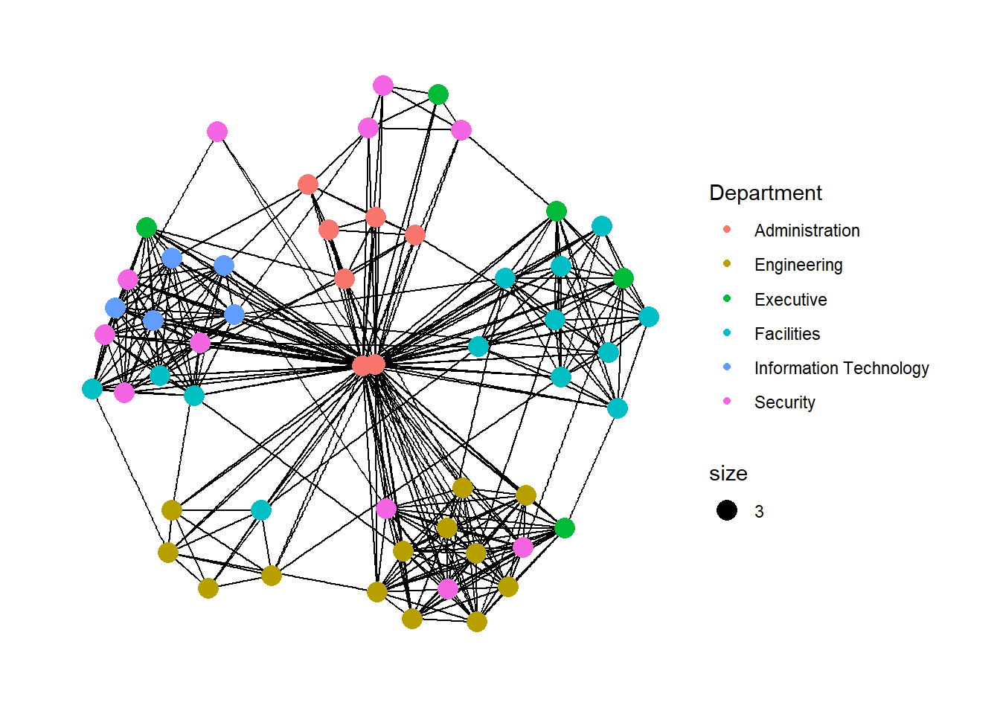
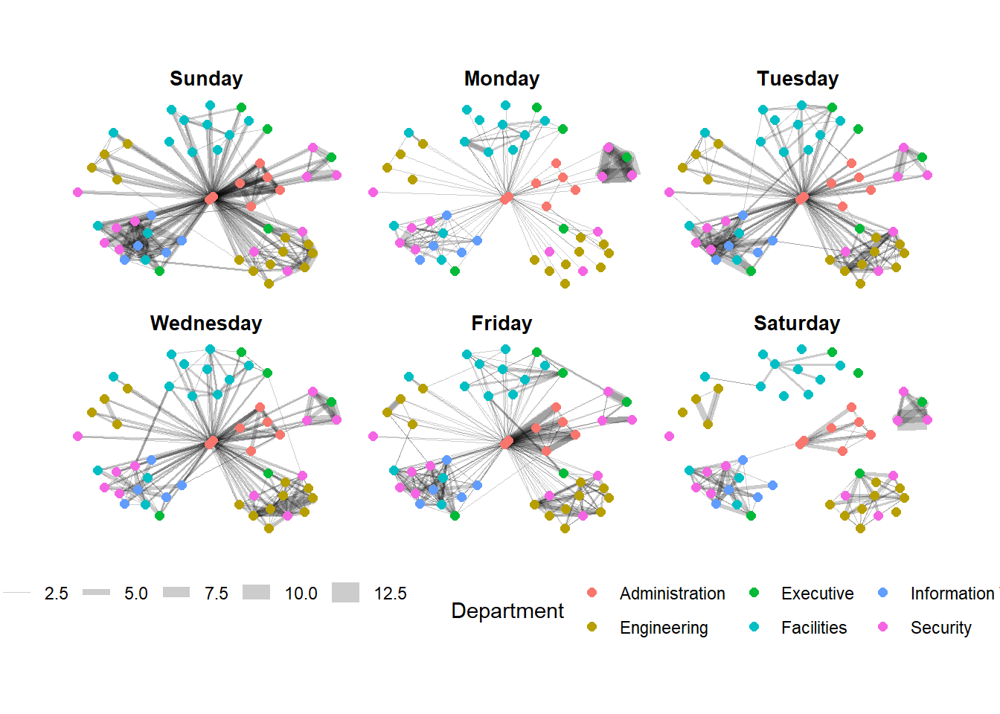
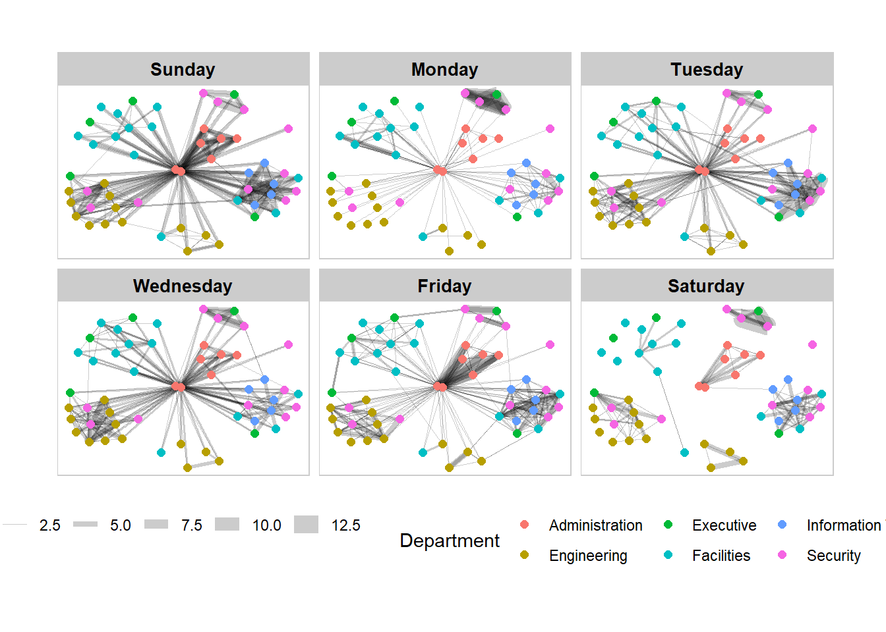
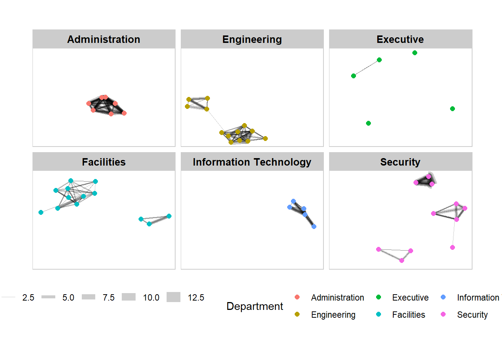
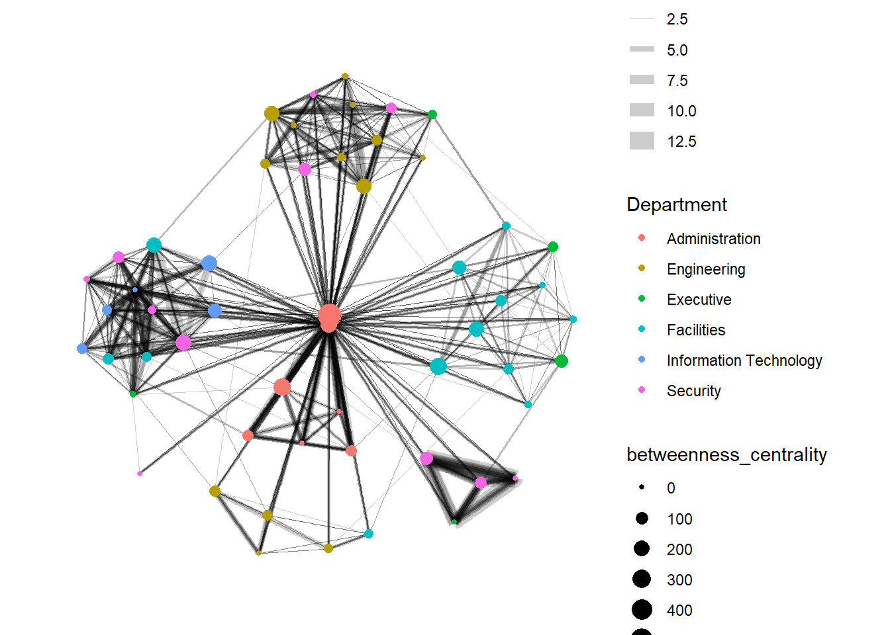
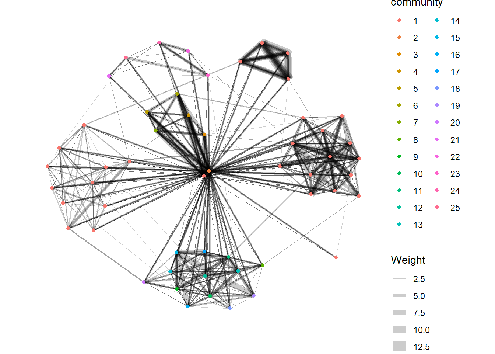

9 Visualise Network Data
Hands-On Exercise for Week 5
(First Published: May 12, 2023)
9.1 Learning Outcome
By the end of this hands-on exercise, we will be able to:
create graph object data frames, manipulate them using appropriate functions of dplyr, lubridate, and tidygraph,
build network graph visualisation using appropriate functions of ggraph,
compute network geometrics using tidygraph,
build advanced graph visualisation by incorporating the network geometrics, and
build interactive network visualisation using visNetwork package.
9.2 Getting Started
9.2.1 Install and load the required r libraries
Install and load the the required R packages. The name and function of the new packages that will be used for this exercise are as follow:
graph: The ‘graph’ package is used for creating, manipulating, and analyzing graphs and networks
tidygraph: Builds on top of the graph package and extends it with the principles of the ‘tidyverse’. It allows for a tidy data approach to working with graph data by providing a grammar of graph manipulation.
ggraph: For visualizing graphs and networks. It provides a flexible and intuitive grammar of graphics interface for creating customized and aesthetically pleasing network visualizations.
visNetwork: For creating interactive network plots with features like zooming, panning, tooltips, and filtering.
lubridate: Provides convenient functions to parse, manipulate, and work with dates and times.
clock: A modern alternative to ‘lubridate’ for handling date and time data.
graphlayouts: Provides various layout algorithms for visualizing graphs and networks.
9.2.2 Import the data
The data sets used in this hands-on exercise is from an oil exploration and extraction company. There are two data sets:
GAStech-email_edges.csv which consists of two weeks of 9063 emails correspondances between 55 employees.
GAStech_email_nodes.csv which consist of the names, department and title of the 55 employees
Review the imported data
We will examine the structure of the data frame using glimpse() of dplyr.
Rows: 9,063
Columns: 8
$ source <dbl> 43, 43, 44, 44, 44, 44, 44, 44, 44, 44, 44, 44, 26, 26, 26…
$ target <dbl> 41, 40, 51, 52, 53, 45, 44, 46, 48, 49, 47, 54, 27, 28, 29…
$ SentDate <chr> "6/1/2014", "6/1/2014", "6/1/2014", "6/1/2014", "6/1/2014"…
$ SentTime <time> 08:39:00, 08:39:00, 08:58:00, 08:58:00, 08:58:00, 08:58:0…
$ Subject <chr> "GT-SeismicProcessorPro Bug Report", "GT-SeismicProcessorP…
$ MainSubject <chr> "Work related", "Work related", "Work related", "Work rela…
$ sourceLabel <chr> "Sven.Flecha", "Sven.Flecha", "Kanon.Herrero", "Kanon.Herr…
$ targetLabel <chr> "Isak.Baza", "Lucas.Alcazar", "Felix.Resumir", "Hideki.Coc…The output report of GAStech_edges above reveals that the SentDate is treated as “Character” data type instead of date data type. Before we continue, it is important for us to change the data type of SentDate field back to “Date”” data type.
Create a new column for week day
We will use the dmy() and wday() functions of lubridate package to convert SentDate to ‘Date’ data type. To note the following:
dmy()transforms the SentDate to Date data type.wday() returns the day of the week as a decimal number or an ordered factor if label is TRUE. The abbr argument is set to FALSE to spell the day of the week in full, i.e. Monday. The function will create a new column in the data.frame i.e. Weekday and the output ofwday()will save in this newly created field.the values in the Weekday field are in ordinal scale.
Remove unneeded records
A close examination of GAStech_edges data.frame reveals that it consists of:
Non-worked related emails
Not grouped by weekends
self-directed e-mails where the individuals send an email to themselves
We will wrangle the data to address these issues.
9.3 Create network objects using tidygraph
While network data itself is not tidy, it can be envisioned as two tidy tables - one for node data and one for edge data. tidygraph provides a way to switch between the two tables and provides dplyr verbs for manipulating the data. Furthermore the package provides access to a lot of graph algorithms with return values that facilitate their use in a tidy workflow.
These two articles provide useful information on tidygraph:
9.3.1 The tbl_graph object
Two functions of tidygraph package can be used to create network objects, they are:
tbl_graph()creates a tbl_graph network object from nodes and edges data.as_tbl_graph()converts network data and objects to a tbl_graph network. Below are network data and objects supported byas_tbl_graph()a node data.frame and an edge data.frame,
data.frame, list, matrix from base,
igraph from igraph,
network from network,
dendrogram and hclust from stats,
Node from data.tree,
phylo and evonet from ape, and
graphNEL, graphAM, graphBAM from graph (in Bioconductor).
9.3.2 The dplyr verbs in tidygraph
The activate() verb from tidygraph serves as a switch between tibbles for nodes and edges. All dplyr verbs applied to tbl_graph object are applied to the active tibble.
In the above the .N() function is used to gain access to the node data while manipulating the edge data. Similarly .E() will give you the edge data and .G() will give you the tbl_graph object itself.
9.3.3 Using tbl_graph() to build tidygraph data model.
We will use tbl_graph() of tinygraph package to build an tidygraph’s network graph data.frame.
Before typing the codes, you are recommended to review to reference guide of tbl_graph()
Let’s take a look at the output tidygraph’s graph object.
# A tbl_graph: 54 nodes and 1372 edges
#
# A directed multigraph with 1 component
#
# A tibble: 54 × 4
id label Department Title
<dbl> <chr> <chr> <chr>
1 1 Mat.Bramar Administration Assistant to CEO
2 2 Anda.Ribera Administration Assistant to CFO
3 3 Rachel.Pantanal Administration Assistant to CIO
4 4 Linda.Lagos Administration Assistant to COO
5 5 Ruscella.Mies.Haber Administration Assistant to Engineering Group Manag…
6 6 Carla.Forluniau Administration Assistant to IT Group Manager
# ℹ 48 more rows
#
# A tibble: 1,372 × 4
from to Weekday Weight
<int> <int> <ord> <int>
1 1 2 Sunday 5
2 1 2 Monday 2
3 1 2 Tuesday 3
# ℹ 1,369 more rowsThe output above reveals that GAStech_graph is a tbl_graph object with 54 nodes and 1372 edges. The command also prints the first six rows of “Node Data” and the first three of “Edge Data”.
Changing the active object
The nodes tibble data frame is activated by default, but you can change which tibble data frame is active with the activate() function. Thus, if we wanted to rearrange the rows in the edges tibble to list those with the highest “weight” first, we could use activate() and then arrange().
For example,
# A tbl_graph: 54 nodes and 1372 edges
#
# A directed multigraph with 1 component
#
# A tibble: 1,372 × 4
from to Weekday Weight
<int> <int> <ord> <int>
1 40 41 Saturday 13
2 41 43 Monday 11
3 35 31 Tuesday 10
4 40 41 Monday 10
5 40 43 Monday 10
6 36 32 Sunday 9
# ℹ 1,366 more rows
#
# A tibble: 54 × 4
id label Department Title
<dbl> <chr> <chr> <chr>
1 1 Mat.Bramar Administration Assistant to CEO
2 2 Anda.Ribera Administration Assistant to CFO
3 3 Rachel.Pantanal Administration Assistant to CIO
# ℹ 51 more rowsVisit the reference guide of activate() to find out more about the function.
9.4 Plot Static Network Graphs with ggraph package
ggraph is an extension of ggplot2, making it easier to carry over basic ggplot skills to the design of network graphs.
As in all network graph, there are three main aspects to a ggraph’s network graph, they are:
For a comprehensive discussion of each of this aspect of graph, please refer to their respective vignettes provided.
9.4.1 Plot a basic network graph
The code chunk below uses ggraph(), geom-edge_link() and geom_node_point() to plot a network graph by using GAStech_graph. Before we get started, it is advisable to read their respective reference guide at least once.

The basic plotting function is ggraph(), which takes the data to be used for the graph and the type of layout desired. Both of the arguments for ggraph() are built around igraph. Therefore, ggraph() can use either an igraph object or a tbl_graph object.
9.4.2 Change the default network graph theme
We can use theme_graph() to remove the x and y axes.
Show the code

ggraph introduces a special ggplot theme that provides better defaults for network graphs than the normal ggplot defaults.
theme_graph(), besides removing axes, grids, and border, changes the font to Arial Narrow (this can be overridden).The ggraph theme can be set for a series of plots with the
set_graph_style()command run before the graphs are plotted or by usingtheme_graph()in the individual plots.
9.4.3 Change the coloring of the plot
The theme_graph() funtion makes it easy to change the coloring of the plot

9.4.4 Working with different graph layouts
ggraph supports many layouts for standard use. They are: star, circle, nicely (default), dh, gem, graphopt, grid, mds, spahere, randomly, fr, kk, drl and lgl.
The figures below are supported by ggraph(). 9.4.5 Fruchterman and Reingold layout
We can use the layout argument to the ggraph() function to specify the preferred layout.
9.4.5 Modify the network nodes
We can use the aes() function within the geom_node_point() function to assign the nodes with colors based on the department of the employees.
Show the code

geom_node_point() is equivalent in functionality to geom_point() of ggplot2. It allows for simple plotting of nodes in different shapes, colours and sizes. In the code chunck above, colour and size are used.
9.4.6 Modify the edges
Similarly, we can use the aes() function within the geom_edge_link() function to map the thickness of the edges with the Weight variable.
Show the code
geom_edge_link() draws edges in the simplest way - as straight lines between the start and end nodes. But, it can do more that that. In the example above, argument width is used to map the width of the line in proportional to the Weight attribute and argument alpha is used to introduce opacity on the line.
9.5 Creating facet graphs
Another very useful feature of ggraph is faceting. In visualising network data, this technique can be used to reduce edge over-plotting in a very meaning way by spreading nodes and edges out based on their attributes. In this section, we will learn how to use faceting technique to visualise network data.
There are three functions in ggraph to implement faceting, they are:
facet_nodes()whereby edges are only draw in a panel if both terminal nodes are present here,facet_edges()whereby nodes are always drawn in al panels even if the node data contains an attribute named the same as the one used for the edge facetting, andfacet_graph()faceting on two variables simultaneously.
9.5.1 Working with facet_edges()
We will use facet_edges() to generate graphs based on the day of the week.
Show the code
We can change the position of the legend using the theme() layer.
Show the code

Further tweaks to add frame and a subtitle border to each graph can be made via the th_background() function.
Show the code
set_graph_style()
g <- ggraph(GAStech_graph,
layout = "nicely") +
geom_edge_link(aes(width=Weight),
alpha=0.2) +
scale_edge_width(range = c(0.1, 5)) +
geom_node_point(aes(colour = Department),
size = 2)
g + facet_edges(~Weekday) +
th_foreground(foreground = "grey80",
border = TRUE) +
theme(legend.position = 'bottom')
9.5.2 Working with facet_node()
We use the facet_node() function to generate departmental graphs in small multiples.
Show the code
set_graph_style()
g <- ggraph(GAStech_graph,
layout = "nicely") +
geom_edge_link(aes(width=Weight),
alpha=0.2) +
scale_edge_width(range = c(0.1, 5)) +
geom_node_point(aes(colour = Department),
size = 2)
g + facet_nodes(~Department)+
th_foreground(foreground = "grey80",
border = TRUE) +
theme(legend.position = 'bottom')
9.6 Network Metric Analysis
9.6.1Compute Centrality Indices
Centrality measures are a collection of statistical indices use to describe the relative important of the actors are to a network. There are four well-known centrality measures, namely: degree, betweenness, closeness and eigenvector. It is beyond the scope of this hands-on exercise to cover the principles and mathematics of these measure here. Go online to find out more!
In the graph below, we compute the Betweenness Centrality (a measure of how often the node serves as a bridge in the shortest path of other node pairs) of the nodes first and map it to the size of the nodes. Hence, the bigger the node, the higher its centrality score.
Show the code

From ggraph v2.0 onwards, tidygraph algorithms such as centrality measures can be accessed directly in ggraph() calls. This means that it is no longer necessary to precompute and store derived node and edge centrality measures on the graph in order to use them in a plot.
9.6.2 Visualise Community
tidygraph package inherits many of the community detection algorithms imbedded into igraph and makes them available to us, including Edge-betweenness (group_edge_betweenness), Leading eigenvector (group_leading_eigen), Fast-greedy (group_fast_greedy), Louvain (group_louvain), Walktrap (group_walktrap), Label propagation (group_label_prop), InfoMAP (group_infomap), Spinglass (group_spinglass), and Optimal (group_optimal). Some community algorithms are designed to take into account direction or weight, while others ignore it. Use this link to find out more about community detection functions provided by tidygraph.
In the following graph, group_edge_betweenness() function is used to detect the communities.
Show the code

9.7 Build interactive network graphs with visNetwork package
visNetwork is a R package for network visualization, using vis.js javascript library.
The visNetwork() function uses a nodes list and edges list to create an interactive graph.
The nodes list must include an “id” column, and the edge list must have “from” and “to” columns.
The function also plots the labels for the nodes, using the names of the actors from the “label” column in the node list.
The resulting graph is fun to play around with.
We can move the nodes and the graph will use an algorithm to keep the nodes properly spaced.
We can also zoom in and out on the plot and move it around to re-center it.
9.7.1 Data Preparation
Before we can plot the interactive network graph, we need to prepare the data by combining the 2 data sets and then group + filter the results.
Show the code
GAStech_edges_aggregated <- GAStech_edges %>%
left_join(GAStech_nodes, by = c("sourceLabel" = "label")) %>%
rename(from = id) %>%
left_join(GAStech_nodes, by = c("targetLabel" = "label")) %>%
rename(to = id) %>%
filter(MainSubject == "Work related") %>%
group_by(from, to) %>%
summarise(weight = n()) %>%
filter(from!=to) %>%
filter(weight > 1) %>%
ungroup()9.7.2 Plot the basic interactive network graph
In the graph below, the Fruchterman and Reingold layout is used.
Show the code
Visit Igraph to find out more about visIgraphLayout’s argument.
9.7.3 Working with visual attributes - Nodes
visNetwork() looks for a field called “group” in the nodes object and colour the nodes according to the values of the group field. Hence, we will have to rename Department field to group.
When we rerun the code chunk below, visNetwork shades the nodes by assigning unique colour to each category in the group field.
9.7.4 Working with visual attributes - Edges
We updated the following arguments in the visEdges() function to generate the graph below:
The arrows argument is used to define where to place the arrow.
The smooth argument is used to plot the edges using a smooth curve.
Show the code
Visit Option to find out more about visEdges’s argument.
9.7.5 Additional Interactivity
Next, we updated the following arguments in the visOptions() function to generate the graph below:
The highlightNearest argument to highlight nearest when clicking a node.
The nodesIdSelection argument adds an id node selection creating an HTML select element.
Show the code
Visit Option to find out more about visOption’s argument.
\(**That's\) \(all\) \(folks!**\)